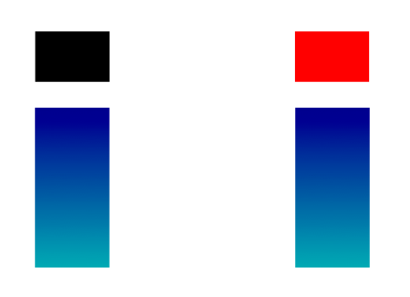
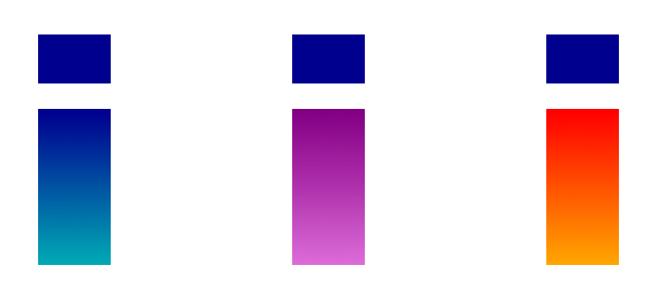

Note
Access to this page requires authorization. You can try signing in or changing directories.
Access to this page requires authorization. You can try changing directories.
This table contains SVG descriptions for some or all of the glyphs in the font.
Introduction
OpenType provides various formats for color fonts, one of which is the SVG table. The SVG table provides the benefits of supporting scalable color graphics using the Scalable Vector Graphics markup language, a vector graphics file format that is widely used on the Web and that provides rich graphics capabilities, such as gradients.
Compared to the other color formats, the SVG table also provides certain other benefits:
- SVG allows for raster artwork as well as vectors, and also allows for combining raster and vector elements in a color glyph. The other formats allow for one or the other, but not both.
- The SVG description for a color glyph is a complete, integrated piece of artwork; no additional glyphs are required for the SVG description. In the COLR table, however, a color glyph may require components that have separate glyph IDs. The conservation of 16-bit glyph IDs when using the SVG table, in comparison with the COLR table, may be beneficial for fonts that support a large number of characters.
There are certain trade-offs, however. File sizes are often larger when using the SVG table than for the other color formats. Also, glyph outlines used in the COLR table can be variable (in a variable font) and can also be hinted, whereas these capabilities are not supported with the SVG table.
SVG was developed for use in environments that allow for a rich set of functionality, including leveraging the full functionality of Cascading Style Sheets for styling, and programmatic manipulation of graphics objects using the SVG Document Object Model. Adoption of SVG for use in OpenType does not entail wholesale incorporation of all SVG capabilities. Text-rendering engines typically have more stringent security, performance and architectural requirements than general-purpose SVG engines. For this reason, when used within OpenType fonts, the expressiveness of the language is limited and simplified to be appropriate for environments in which font processing and text layout occurs.
The SVG table is optional, and may be used in OpenType fonts with TrueType, CFF or CFF2 outlines. For every SVG glyph description, there must be a corresponding TrueType, CFF or CFF2 glyph description in the font.
SVG table formats
The SVG table has a header and an SVGDocumentList subtable.
| Type | Name | Description |
|---|---|---|
| uint16 | version | Table version (starting at 0). Set to 0. |
| Offset32 | svgDocumentListOffset | Offset to the SVGDocumentList, from the start of the SVG table. Must be non-zero. |
| uint32 | reserved | Set to 0. |
The SVG document list provides a set of SVG documents, each of which defines one or more glyph descriptions.
SVGDocumentList:
| Type | Name | Description |
|---|---|---|
| uint16 | numEntries | Number of SVGDocumentRecords. Must be non-zero. |
| SVGDocumentRecord | documentRecords[numEntries] | Array of SVGDocumentRecords. |
Each SVG document record specifies a range of glyph IDs (from startGlyphID to endGlyphID, inclusive), and the location of its associated SVG document in the SVG table.
SVGDocumentRecord:
| Type | Name | Description |
|---|---|---|
| uint16 | startGlyphID | The first glyph ID for the range covered by this record. |
| uint16 | endGlyphID | The last glyph ID for the range covered by this record. |
| Offset32 | svgDocOffset | Offset from the beginning of the SVGDocumentList to an SVG document. Must be non-zero. |
| uint32 | svgDocLength | Length of the SVG document data. Must be non-zero. |
Records must be sorted in increasing startGlyphID order. For any given record, the startGlyphID must be less than or equal to the endGlyphID of that record, and also must be greater than the endGlyphID of any previous record.
Note: Two or more records can point to the same SVG document. In this way, a single SVG document can provide glyph descriptions for discontinuous glyph ID ranges. See Example 1.
SVG documents
SVG specification
The SVG markup language used in the SVG table is defined in the Scalable Vector Graphics (SVG) 1.1 (Second Edition) specification at http://www.w3.org/TR/SVG11. Any SVG features beyond those in the SVG 1.1 specification are not supported, unless explicitly indicated otherwise.
Previous versions of this specification allowed use of context-fill and other context-* property values, which are defined in the draft SVG 2 specification. Use of these properties is deprecated: conforming implementations may support these properties, but support is not required or recommended, and use of these properties in fonts is strongly discouraged.
Document encoding and format
SVG documents within an OpenType SVG table may either be plain text or gzip-encoded, and applications that support the SVG table must support both.
The gzip format is defined in RFC 1952, “GZIP file format specification version 4.3”, available at http://www.ietf.org/rfc/rfc1952.txt. Within a gzip-encoded SVG document, the deflate compression method (defined in RFC 1951, available at http://www.ietf.org/rfc/rfc1951.txt) must be used. Thus, the first three bytes of the gzip-encoded document header must be 0x1F, 0x8B, 0x08.
Whether compressed or plain-text transfer encoding is used, the svgDocLength field of the SVG document record specifies the length of the encoded data, not the decoded document.
The character encoding of the (uncompressed) SVG document must be UTF-8.
While SVG 1.1 is defined as an XML application, some SVG implementations for the Web use an “HTML dialect”. The “HTML dialect” differs from the XML-based definition in various ways, including being case-insensitive (XML is case-sensitive), and not requiring an xmlns attribute on the SVG root element. Applications that support the OpenType SVG table must support the XML-based definition for SVG 1.1. Applications may use SVG-parsing libraries that also support the “HTML dialect”. However, SVG documents within OpenType fonts must always conform to the XML-based definition.
While SVG 1.1 requires conforming interpreters to support XML namespace constructs, applications that support the OpenType SVG table are not required to have full support for XML namespaces. The root element of each SVG document must declare SVG as the default namespace:
<svg version="1.1" xmlns="http://www.w3.org/2000/svg">
If the XLink href attribute is used, the root must also declare “xlink” as a namespace in the root element:
<svg version="1.1" xmlns="http://www.w3.org/2000/svg" xmlns:xlink="http://www.w3.org/1999/xlink">
No other XLink attributes or other mechanisms may be used anywhere in the document. Also, no other namespace declarations should be made in any element.
SVG capability requirements and restrictions
Most SVG 1.1 capabilities are supported in OpenType, and should be supported in all OpenType applications that support the SVG table. Some SVG 1.1 capabilities are not required and may be optionally supported in applications. Certain other capabilities are not supported in OpenType and must not be used in SVG documents within OpenType fonts.
The following capabilities are restricted from use in OpenType and must not be used in conforming fonts. If use of associated elements is encountered within a font, conforming applications must ignore and not render those elements.
- <text>, <font>, and associated elements
- <foreignObject> elements
- <switch> elements
- <script> elements
- <a> elements
- <view> elements
- XSL processing
- Use of relative units em, ex
- Use of SVG data within <image> elements
- Use of color profiles (the <icccolor> data type, the <color-profile> element, the color-profile property, or the CSS @color-profile rule)
- Use of the contentStyleType attribute
- Use of CSS2 system color keywords
SVG documents may include <desc>, <metadata> or <title> elements, but these are ignored by implementations.
Support for the following capabilities is not required in conforming implementations, though some applications may support them. Font developers should evaluate support for these capabilities in the target environments in which their fonts will be used before using them in fonts. To ensure interoperability across the broadest range of environments, use of these capabilities should be avoided.
- Internal CSS stylesheets (expressed using the <style> element)
- CSS inline styles (expressed using the style attribute)
- CSS variables (custom properties) — but see further qualifications below
- CSS media queries, calc() or animations
- SVG animations
- SVG child elements
- <filter> elements and associated attributes, including enableBackground
- <pattern> elements
- <mask> elements
- <marker> elements
- <symbol> elements
- Use of XML entities
- Use of image data within <image> elements in formats other than JPEG or PNG
- Interactivity capabilities (event attributes, zoomAndPan attributes, the cursor property, or <cursor> elements)
Note: In fonts intended for broad distribution, use of XML presentation atttributes for styling is recommended over CSS styling as that will have the widest support across implementations.
Note: Use of media queries to react to environment changes within a glyph description is not recommended, even when fonts are used in applications that provide CSS media query support. Instead, a higher-level presentation framework should handle environment changes. The higher-level framework can interact with options implemented within the font using OpenType mechanisms such as glyph substitution, or selection of color palettes.
While supporting the use of CSS variables is optional, it is strongly recommended that all implementations support the CSS var() function and color variables derived from colors defined in the CPAL table. Fonts should not define any variables within an SVG document; var() should only be used in attributes or properties that accept a color value, and should only occur as the first item in the value. See Color and Color Palettes below for more information.
While support for patterns and masks is not required, all conforming implementations must support gradients (<linearGradient> and <radialGradient> elements), clipping paths and opacity properties.
Conforming implementations must support all other capabilities of SVG 1.1 that are not listed above as restricted or as optional and best avoided for broad interoperability.
Color and color palettes
In SVG 1.1, color values can be specified in various ways. For some of these, special considerations apply when used in the SVG table. Also, OpenType provides a mechanism for alternate, user-selectable color palettes that can be used within SVG glyph descriptions.
Colors
Implementations must support numerical RGB specifications; for example, “#ffbb00”, or “rgb(255,187,0)”. Implementations must also support all of the recognized color keywords supported in SVG 1.1. However, CSS2 system color keywords are not supported and must not be used.
Some implementations may use graphics engines that happen to support RGBA specifications using the rgba() function. This is not supported in OpenType, however, and rgba() specifications must not be used in conforming fonts. Note that SVG 1.1 provides opacity properties that can achieve the same effects.
Implementations must also support the “currentColor” keyword. The initial value must be set by the text-layout engine or application environment. This can be set in whatever way is considered most appropriate for the application. In general, it is recommended that this be set to the text foreground color applied to a given run of text.
Note: Within an SVG document, the value of “currentColor” for any element is the current color property value for that element. If a color property is set explicitly on an element, it will reset the “currentColor” value for that element and its children. Doing so will override the value set by the host environment. In SVG documents within the SVG table, there is no scenario in which it would be necessary to set a color property value since any effects can be achieved in other ways. Setting a color property value should be avoided.
Color palettes
Implementations can optionally support color palettes defined in the CPAL table. The CPAL table allows the font designer to define one or more palettes, each containing a number of colors. All palettes defined in the font have the same number of colors, which are referenced by base-zero index. Within an SVG document in the SVG table, colors in a CPAL palette are referenced as implementation-defined CSS variables (custom properties), using the var() function.
Support for the CPAL table and palettes in implementations is strongly recommended. Implementations that support palettes must support the CSS var() function for purposes of referencing palette entries as custom properties. Fonts should only use custom properties and the var() function to reference CPAL palette entries. Fonts should not define any variables within an SVG document. The var() function should only be used in attributes or properties that accept a color value, and should only occur as the first item in the value.
Note: Even if an implementation does not support CPAL palettes, it is strongly recommended that the var() function be supported, and that the implementation is able to apply a fallback value specified as a second var() argument if the first argument (the color variable) is not supported. This will allow fonts intended for wide distribution to include use of the CPAL table but to be able to specify fallback colors in case CPAL palettes are not supported in some applications.
The text-layout engine or application defines a custom property for each palette entry and assigns color values to each one. Custom color properties should only be defined for fonts that include a CPAL table. In general, the values of the custom properties should be set using palette entries from the CPAL table, though applications can assign values derived by other means, such as user input. When assigning values from CPAL palette entries, the first palette should normally be used by default. If the font has palettes marked with the USABLE_WITH_LIGHT_BACKGROUND or USABLE_WITH_DARK_BACKGROUND flag, however, one of these palettes can be used as the default instead.
However the values are assigned, the number of custom properties defined must be numPaletteEntries, as specified in the CPAL table header. The custom-property names must be of the form “--color<num>”, where <num> is a non-zero-padded decimal number in the range [0, numPaletteEntries-1]. For example, “--color0”, “--color1”, and so on.
The following illustrates how a color variable might be used in an SVG glyph description:
<path fill="var(--color0, yellow)" d="..."/>
In implementations that do support color variables and palettes, the color value assigned to the variable will be applied. If an implementation does not support color variables and palettes, however, the var() function should still be supported. In that way, the color variable will be ignored, but the fallback color value, yellow, will be applied.
Palette entries in the CPAL table are specified as BGRA values. (CPAL alpha values are in the range 0 to 255, where 0 is fully transparent and 255 is fully opaque.) Note that SVG 1.1 supports RGB color values, but not RGBA/BGRA color values. As noted above, use of rgba() color values within SVG documents in the SVG table is not supported and must not be used in conforming fonts. Alpha values in CPAL entries are supported, however. When a CPAL color entry is applied to a fill or stroke property of a shape element, to the stop-color of a gradient stop element, or to the flood-color property of an feFlood filter element, then the alpha value from that palette entry must be converted to a value in the range [0.0 – 1.0] and multiplied into the corresponding fill-opacity, stroke-opacity, stop-opacity or flood-opacity property of the same element. If an implementation supports feDiffuseLighting or feSpecularLighting filters and a palette entry is applied to the lighting-color property, then the alpha value is ignored. When the alpha value is applied in this way to an opacity property of an element, it is the original opacity property value that is inherited by child elements, not the computed result of applying the alpha value to the opacity property. The alpha value is inherited as a component of the color-related property (fill, stroke, etc.), however.
Glyph Identifiers
As noted above, each SVG document defines one or more glyph descriptions. For each glyph ID in the glyph ID range of a document record within the SVG document list, the associated SVG document must contain an element with ID “glyph<glyphID>”, where <glyphID> is the glyph ID expressed as a non-zero-padded decimal value. This element functions as the SVG glyph description for the given glyph ID.
For example, suppose a font with 100 glyphs (glyph IDs 0 – 99) has SVG glyph definitions only for its last 5 glyphs. Suppose also that the last SVG glyph definition has its own SVG document, but that the other four glyphs are defined in a single SVG document (to take advantage of shared graphical elements, for instance). There will be two document records: the first, with glyph ID range [95, 98]; and the second, with glyph ID range [99, 99]. The SVG document referenced by the first record will contain elements with IDs “glyph95”, “glyph96”, “glyph97”, and “glyph98”. The SVG document referenced by the second record will contain an element with ID “glyph99”.
Glyph identifiers may appear deep within an SVG element hierarchy, but SVG itself does not define how partial SVG documents are to be rendered. Thus, font engines shall render an element designated in this way as the glyph description for a given glyph ID according to SVG’s <use> tag behavior, as though the given element and its content were specified in a <defs> tag and then referenced as the graphic content of an SVG document. For example, consider the following SVG document, which defines two glyphs:
<svg version="1.1" xmlns="http://www.w3.org/2000/svg"> <defs>...</defs> <g id="glyph13">...</g> <g id="glyph14">...</g> </svg>
Note: The <g> element in SVG is a container for grouping of elements, not a “glyph” element.
When a font engine renders glyph 14, the result shall be the same as rendering the following SVG document:
<svg version="1.1" xmlns="http://www.w3.org/2000/svg" xmlns:xlink="http://www.w3.org/1999/xlink">
<defs>
<defs>...</defs>
<g id="glyph14">...</g>
</defs>
<use xlink:href="#glyph14" />
</svg>
Glyph semantics and text layout processing
An SVG glyph description in the SVG table is an alternate to the corresponding glyph description with the same glyph ID in the 'glyf', 'CFF ' or CFF2 table. The SVG glyph description must provide a depiction of the same abstract glyph as the corresponding TrueType/CFF/CFF2 glyph description.
When SVG glyph descriptions are used, text layout is done in the same manner, using the 'cmap', 'hmtx', GSUB and other tables. This results in an array of final glyph IDs arranged at particular x,y positions on a surface (along with applicable scale/rotation matrices). After this layout processing is done, available SVG descriptions are used in rendering, instead of the TrueType/CFF/CFF2 descriptions. For each glyph ID in the final glyph array, if an SVG glyph description is available for that glyph ID, then it is rendered using an SVG engine; otherwise, the TrueType, CFF or CFF2 glyph description is rendered. Glyph advance widths or heights are the same for SVG glyphs as for TrueType/CFF/CFF2 glyphs, though there may be small differences in glyph ink bounding boxes. Because advances are the same, switching between SVG and non-SVG rendering should not require re-layout of lines unless the line layout depends on bounding boxes.
Coordinate systems and glyph metrics
The default SVG coordinate system is vertically mirrored in comparison to the TrueType/CFF/CFF2 design grid: the positive y-axis points downward, rather than usual convention for OpenType of the positive y-axis pointing upward. In other respects, the default coordinate system of an SVG document corresponds to the TrueType/CFF/CFF2 design grid: the default units for the SVG document are equivalent to font design units; the SVG origin (0,0) is aligned with the origin in the TrueType/CFF/CFF2 design grid; and y = 0 is the default horizontal baseline used for text layout.
The size of the initial viewport for the SVG document is the em square: height and width both equal to head.unitsPerEm. If a viewBox attribute is specified on the <svg> element with width or height values different from the unitsPerEm value, this will have the effect of a scale transformation on the SVG “user” coordinate system. Similarly, if height or width attributes are specified on the <svg> element, this will also have the effect of a scale transformation on the coordinate system.
Although the initial viewport size is the em square, the viewport must not be clipped. The <svg> element is assumed to have a clip property value of auto, and an overflow property value of visible. A font should not specify clip or overflow properties on the <svg> element. If clip or overflow properties are specified on the <svg> element with any other values, they must be ignored.
Note: Because SVG uses a y-down coordinate system, then by default, glyphs will often be drawn in the +x -y quadrant of the SVG coordinate system. (See Example 2.) In many other environments, however, graphic elements may need to be in the +x +y quadrant to be visible. Font development tools are expected to provide an appropriate transfer between a design environment and the representation within the font’s SVG table. In Example 3, a viewBox attribute is used to shift the viewport up. In Example 4, a translate transform is used on container elements to shift the graphic elements that comprise the glyph descriptions.
Glyph advance widths are specified in the 'hmtx' table; advance heights are specified in the 'vmtx' table. Note that, if SVG or CSS animations are supported, glyph advances must not be affected by animations.
As with CFF glyphs, no explicit glyph bounding boxes are recorded. Note that left side bearing values in the 'hmtx' table, top side bearings in the 'vmtx' table, and bit 1 in the flags field of the 'head' table are not used for SVG glyph descriptions. The “ink” bounding box of the rendered SVG glyph should be used if a bounding box is desired; this box may be different for animated versus static renderings of the glyph.
Glyph advances and positions can be adjusted by data in the GPOS or 'kern' tables. Note that data in the GPOS and 'kern' table use the y-up coordinate system, as with TrueType or CFF glyph descriptions. When applied to SVG glyph descriptions, applications must handle the translation between the y-up coordinate system and the y-down coordinates used for the SVG glyph descriptions.
Animations
Some implementations may support use of animations—either SVG animation or CSS animation. Note that support for animation is optional and is not recommended in fonts intended for wide distribution.
Applications that support animations may, in some cases, require a static rendering for glyphs that include animations. This may be needed, for example, when printing. Note that a static rendering is obtained by ignoring and not running any animations in the SVG document, not by allowing animations to run and capturing the initial frame at time = 0.
Note that glyph advance widths and advance heights are defined in the 'hmtx' and 'vmtx' tables, and cannot be animated. A glyph’s bounding box may change during animation, but should remain within the glyph advance width/height and the font’s default line metrics to avoid collision with other text elements.
SVG glyph examples
The SVG code in these examples is presented exactly as could be used in the SVG documents of an OpenType font with SVG glyph descriptions. The code is not optimized for brevity.
Example 1: SVG table header and document list
This example shows an SVG table header and document list.
In the SVG Document List, multiple SVG Document Records can point to the same SVG document. In this way, a single SVG document can provide glyph descriptions for a discontinuous range of glyph IDs. This example shows multiple records in the Document List pointing to the same SVG document.
Example 1:
| Hex Data | Source | Comments |
|---|---|---|
| SVGHeader | ||
| 0000 | version | Table version = 0 |
| 0000000A | svgDocumentListOffset | Offset to document list |
| 00000000 | reserved | |
| SVGDocumentList | ||
| 0005 | numEntries | Five documentRecord entries, index 0 to 4 |
| documentRecords[0] | Document record for glyph ID range [1, 1] | |
| 0001 | startGlyphID | |
| 0001 | endGlyphID | |
| 0000003E | svgDocOffset | Offset to SVG document for glyph 1 |
| 0000019F | svgDocLength | Length of SVG document for glyph 1 |
| documentRecords[1] | Document record for glyph ID range [2, 2] | |
| 0002 | startGlyphID | |
| 0002 | endGlyphID | |
| 000001DD | svgDocOffset | Offset to SVG document for glyph 2. The same SVG document is also used for glyphs 13 and 14. |
| 000002FF | svgDocLength | Length of SVG document for glyph 2 — length of the entire SVG document, covering glyphs 2, 13 and 14. |
| documentRecords[2] | Document record for glyph ID range [3, 12] | |
| 0003 | startGlyphID | |
| 000C | endGlyphID | |
| 000004DC | svgDocOffset | Offset to SVG document for glyphs 3 to 12 |
| 000006F4 | svgDocLength | Length of SVG document for glyphs 3 to 12 |
| documentRecords[3] | Document record for glyph ID range [13, 14] | |
| 000D | startGlyphID | |
| 000E | endGlyphID | |
| 000001DD | svgDocOffset | Offset to SVG document for glyphs 2, 13, 14. Offset is the same as for documentRecords[1]. |
| 000002FF | svgDocLength | Length of SVG document for glyphs 2, 13, 14. Length is the same as for documentRecords[1]. |
| documentRecords[4] | Document record for glyph ID range [15, 19] | |
| 000F | startGlyphID | |
| 0013 | endGlyphID | |
| 00000BD0 | svgDocOffset | Offset to SVG document for glyphs 15 to 19 |
| 00000376 | svgDocLength | Length of SVG document for glyphs 15 to 19 |
Example 4 illustrates an SVG document with glyph descriptions for the discontinuous ranges [2, 2], [13, 14].
Example 2: Glyph specified directly in expected position
In this example, the letter “i” is drawn directly in the +x -y quadrant of the SVG coordinate system, upright, with its baseline on the x axis. Note that the y attribute of the <rect> elements specifies the top edge, with the height of the rectangle below that.
Example 2:
<svg id="glyph7" version="1.1" xmlns="http://www.w3.org/2000/svg">
<defs>
<linearGradient id="grad" x1="0%" y1="0%" x2="0%" y2="100%">
<stop offset="0%" stop-color="darkblue" stop-opacity="1" />
<stop offset="100%" stop-color="#00aab3" stop-opacity="1" />
</linearGradient>
</defs>
<rect x="100" y="-430" width="200" height="430" fill="url(#grad)" />
<rect x="100" y="-635" width="200" height="135" fill="darkblue" />
</svg>
The following image shows the visual result:
Example 3: Glyph shifted up with viewBox
When designing in an SVG illustration application, it may be most natural to draw objects in the +x +y quadrant of the SVG coordinate system. In this example, the glyph description of the letter “i” is specified with upright orientation in the +x +y quadrant as though the baseline were at y=1000 in the SVG coordinate system. A viewBox in the <svg> element is then used to shift the viewport down by 1000 units so that the actual baseline aligns with the design’s baseline.
Note: When using a viewBox attribute on the <svg> element, it is important to specify unitsPerEm for width and height values to avoid a scaling effect. See Coordinate Systems and Glyph Metrics for more information.
Example 3:
<svg id="glyph7" version="1.1" xmlns="http://www.w3.org/2000/svg" viewBox="0 1000 1000 1000">
<defs>
<linearGradient id="grad" x1="0%" y1="0%" x2="0%" y2="100%">
<stop offset="0%" stop-color="darkblue" stop-opacity="1" />
<stop offset="100%" stop-color="#00aab3" stop-opacity="1" />
</linearGradient>
</defs>
<rect x="100" y="570" width="200" height="430" fill="url(#grad)" />
<rect x="100" y="365" width="200" height="135" fill="darkblue" />
</svg>
The visual result is the same as that shown for Example 2.
Example 4: Common elements shared across glyphs in same SVG doc
In this example, the base of the letter “i” is specified as a component within the <defs> element so that it can be re-used across three glyphs. This shared component is referenced using the identifier “i-base”. In glyph2, the component is used alone to comprise the “dotless i”. In glyph13, a dot is added on top. In glyph14, an acute accent is added on top.
This example also illustrates the use of a translate transform to shift elements drawn in the +x +y quadrant of the SVG coordinate system so that they appear in the +x -y quadrant, above the baseline.
Example 4:
<svg version="1.1" xmlns="http://www.w3.org/2000/svg" xmlns:xlink="http://www.w3.org/1999/xlink">
<defs>
<linearGradient id="grad" x1="0%" y1="0%" x2="0%" y2="100%">
<stop offset="0%" stop-color="darkblue" stop-opacity="1" />
<stop offset="100%" stop-color="#00aab3" stop-opacity="1" />
</linearGradient>
<g id="i-base">
<rect x="100" y="570" width="200" height="430" fill="url(#grad)" />
</g>
</defs>
<g id="glyph2" transform="translate(0,-1000)">
<use xlink:href="#i-base" />
</g>
<g id="glyph13" transform="translate(0,-1000)">
<use xlink:href="#i-base" />
<rect x="100" y="365" width="200" height="135" fill="darkblue" />
</g>
<g id="glyph14" transform="translate(0,-1000)">
<use xlink:href="#i-base" />
<polygon fill="darkblue" points="120,500 280,500 435,342 208,342"/>
</g>
</svg>
The following image shows the visual results for glyph IDs 2, 13, and 14, from left to right.
Example 5: Specifying currentColor in glyphs
This example uses the same glyph description for “i” as in Example 2 with one modification: the “darkblue” color value for the dot of the “i” is replaced with the “currentColor” keyword. The application sets the color value for currentColor, typically with the text foreground color.
Example 5:
<svg id="glyph7" version="1.1" xmlns="http://www.w3.org/2000/svg" viewBox="0 1000 1000 1000">
<defs>
<linearGradient id="grad" x1="0%" y1="0%" x2="0%" y2="100%">
<stop offset="0%" stop-color="darkblue" stop-opacity="1" />
<stop offset="100%" stop-color="#00aab3" stop-opacity="1" />
</linearGradient>
</defs>
<rect x="100" y="570" width="200" height="430" fill="url(#grad)" />
<rect x="100" y="365" width="200" height="135" fill="currentColor" />
</svg>
The following image illustrates visual results with currentColor set to two different color values by the application: black (left), and red (right).

Example 6: Specifying color palette variables in glyphs
This example uses the same glyph description for “i” as in Example 2, but with a modification: the stop colors of the linear gradient are specified using color variables --color0 and --color1.
The font in this example includes a CPAL table. The value for the color variables is set by the application, typically using CPAL entries. The CPAL table assumed in this example has two palettes, each with two entries, with BGRA color values as follows:
- palette 0: {8B0000FF, B3AA00FF}
- palette 1: {800080FF, D670DAFF}
(SVG equivalents for colors in palette 0 would be {darkblue, #00aab3}. SVG equivalents for colors in palette 1 would be {purple, orchid}.)
In each of the var() invocations used to reference the color variables, a second parameter for a fallback color value has been specified. The values match the values used in palette 0. These fallback values will be used if the application does not support the CPAL table.
Example 6:
<svg id="glyph7" version="1.1" xmlns="http://www.w3.org/2000/svg" viewBox="0 1000 1000 1000">
<defs>
<linearGradient id="grad" x1="0%" y1="0%" x2="0%" y2="100%">
<stop offset="0%" stop-color="var(--color0,darkblue)" stop-opacity="1" />
<stop offset="100%" stop-color="var(--color1,#00aab3)" stop-opacity="1" />
</linearGradient>
</defs>
<rect x="100" y="570" width="200" height="430" fill="url(#grad)" />
<rect x="100" y="365" width="200" height="135" fill="darkblue" />
</svg>
The following images show the visual results in three situations, from left to right:

The first case, on left, shows the result when the values of the color variables have been set using palette 0 from the CPAL table. The second case, in the middle, shows the result when values have been set using palette 1.
The third case, on the right, shows a result in which the application has set the values of the color variables using a custom palette with user-specified colors:
- --color0: red
- --color1: orange
Note that, in all three cases, the dot of the “i” is still dark blue, since this is hard coded in the glyph description and not controlled by a color variable.
If the application has not set values for --color0 and --color1 (because it does not support the CPAL table, for example), then the fallback values provided in the var() functions (darkblue and #00aab3, respectively) are used. Note that these are in fact the same colors as in the first (default) CPAL color palette, which means the glyph will render as in the first case shown above.
Example 7: Embedding a PNG in an SVG glyph
In this example, PNG data is embedded within an <image> element.
A typical use case for embedding PNG data is detailed artwork in a lettering font.
Example 7:
<svg id="glyph2" version="1.1" xmlns="http://www.w3.org/2000/svg" xmlns:xlink="http://www.w3.org/1999/xlink" viewBox="0 1000 1000 1000">
<image x="100" y="365" width="200" height="635"
xlink:href="data:image/png;base64,
iVBORw0KGgoAAAANSUhEUgAAAMgAAAJ7CAYAAACmmd5sAAAFZklEQVR42u3XsQ3D
MBAEQUpw9ypahrMPGGwiwcFMCQQW9zzWuu4FbJ2eAAQCAgGBgEBAICAQEAgIBAQC
CAQEAgIBgYBAQCAgEBAICAQEAggEBAICAYGAQEAgIBAQCAgEEAgIBAQCAgGBgEBA
ICAQEAgIBBAICAQEAgIBgYBAQCAgEBAIIBAQCAgEBAICAYGAQEAgIBAQCCAQEAgI
BAQCAgGBgEBAICAQQCAgEBAICAQEAgIBgYBAQCAgEEAgIBAQCAgEBAICAYGAQEAg
IBBPAAIBgYBAQCAgEBAICAQEAgIBBAICAYGAQEAgIBAQCAgEBAICAQQCAgGBgEBA
ICAQEAgIBAQCCAQEAgIBgYBAQCAgEBAICAQEAggEBAICAYGAQEAgIBAQCAgEAAAA
AAAAAAAAAAAAAAAAAAAAAAAAAAAAAAAAAAAAAAAAAAAAAAAAAAAAAAAAAAAAAAAA
AAAA4DHHWtftGWDv80sE2Ds9AQgEBAL+IPBuIAoBJxYIBAQCPukgEHBigUBAIOAP
AlgQiAtiQsCCgEDAJx0sCFgQsCAgEHBigQUB5oKYELAgIBDwSQcLAhYELAgIBJxY
YEEACwItEIWAEwucWGBBwIKABQGBgBMLLAhYEMCCQFwQEwJOLHBigQUBCwICAScW
WBCwIGBBAIFAPbHcWGBBwCcdLAgIBJxYYEHAgoAFAYEA88RyY4EFAZ90sCAgEBAI
+IOAQMCJBQIBBALxD+ITAj7p4MQCgYBAwB8EBAJOLBAICATwB4EYiELAiQUCAYGA
TzoIBJxYIBAQCPiDABYE4oKYELAgIBDwSQcLAhYELAgIBJxYYEGAuSAmBCwICAR8
0sGCgAUBCwICAScWWBDAgkALRCHgxAInFlgQsCBgQUAg4MQCCwIWBLAgEBfEhIAT
C5xYYEHAgoBAwIkFFgQsCFgQQCBQTyw3FlgQ8EkHCwICAScWWBCwIGBBQCDAPLHc
WGBBwCcdLAgIBAQC/iAgEHBigUAAgUD8g/iEgE86OLFAICAQ8AcBgYATCwQCAgH8
QSAGohBwYoFAQCDgkw4CAScWCAQEAv4ggAWBuCAmBCwICAR80sGCgAUBCwICAScW
WBBgLogJAQsCAgGfdLAgYEHAgoBAwIkFFgSwINACUQg4scCJBRYELAhYEBAIOLHA
goAFASwIxAUxIeDEAicWWBCwICAQcGKBBQELAhYEEAjUE8uNBRYEfNLBgoBAwIkF
FgQsCFgQEAgwTyw3FlgQ8EkHCwICAYGAPwgIBJxYIBBAIBD/ID4h4JMOTiwQCAgE
/EFAIODEAoGAQAB/EIiBKAScWCAQEAj4pINAwIkFAgGBgD8IYEEgLogJAQsCAgGf
dLAgYEHAgoBAwIkFFgSYC2JCwIKAQMAnHSwIWBCwICAQcGKBBQEsCLRAFAJOLHBi
gQUBCwIWBAQCTiywIGBBAAsCcUFMCDixwIkFFgQsCAgEnFhgQcCCgAUBBAL1xHJj
gQUBn3SwICAQcGKBBQELAhYEBALME8uNBRYEfNLBgoBAQCDgDwICAScWCAQQCMQ/
iE8I+KSDEwsEAgIBfxAQCDixQCAgEMAfBGIgCgEnFggEBAI+6SAQcGKBQEAg4A8C
WBCIC2JCwIKAQMAnHSwIWBCwICAQcGKBBQHmgpgQsCAgEPBJBwsCFgQsCAgEnFhg
QQALAi0QhYATC5xYYEHAgoAFAYGAEwssCFgQwIJAXBATAk4scGKBBQELAgIBJxZY
ELAgYEEAgUA9sdxYYEHAJx0sCAgEnFhgQcCCgAUBgQDzxHJjgQUBn3SwICAQEAj4
g4BAwIkFAgEEAvEP4hMCPungxAKBgEDgH3wBrUwJtCBGuc0AAAAASUVORK5CYII=
"/>
</svg>
The following image shows the visual result:
Collaborate with us on GitHub
The source for this content can be found on GitHub, where you can also create and review issues and pull requests. For more information, see our contributor guide.
OpenType specification